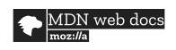

The purpose of IT in modern business
The purpose of IT in modern business today is practically everywhere.
All businesses need some sort of online presence,
or without this it would be a lot more difficult to run.
You can promote the business through online presence,
have your list of existing customers neat and tidy in a virtual folder,
and add new customers easily to that list.
From the customer point of view it makes it a lot easier to order things
as many many things can be delivered to your door in just a few clicks.
Methods, skills and sources
To make a project successful there's quite a few ingredients needed.
Hardware and software such as Python, Javascript, VS Code, PyCharm or other are of course necessary,
as well as a good team of people who can think outside the box.
Different people with different skills make up the perfect team if they work well together,
communication is key. Programs and Apps like Trello and Slack are helpful to make communication easier
and share information. There's various websites that can help from beginners to professionals.
Here is just a few:


Planning and carrying out tasks
To create a website the first thing to do is do some research, have a look at other websites.
You can make notes of things you like about a website and things you don't like, things that seem important to you
and others that are less important. Create a Trello board with your ideas and what you'd like to do.
The trello board makes it really easy to see where you're up to. You can set preferences on the more important tasks
if there's a time limit for example, and if there's a few fine details or touch ups that could be left for later.
Please find here my Trello board I used to create my website
Risks that can impact digital projects
The risks of digital projects are that they depend on connectivity,
everything is only digital ...as it says. Without backup a whole lot of information
can just be lost and gone. Internet failure and viruses can get in the way of a succeeding project.
People need to be made aware of the risks and where they occur.
How to select the right technology for the right Job
For the right selection of IT and software for your project
you should do some research first. There is an infinite amount of websites
who can help you.
Quite often it would be ideal to have more than one tool for the realisation.
If the project is building a website for example, a desk computer would allow you
to have a good overview as you have got a big screen, you can have multiple windows open
and usually have a lot of space on the hard drive. Look out for a good processor when choosing your computer.
It is important to have more than one tool, like phones can be really helpful too. You have always got them with you,
you can make notes and also keep in touch with your team working on the same project. This is where apps like slack come in handy,
where you can share all sorts of information, be it just a text or idea, a link to something or folders.
Analysis
Trello has been good to keep an organised list of to do things and what's been done.
You can also brainstorm and write things down you would have done differently or added
to your project if you would have had more time. The phone is your best friend as it's always close to you
so whenever something pops up into your head → just write it down in your phone notes and the idea won't be lost.
Then there's the essential programs like vs code html and css that were needed to complete the tasks w've been asked for.
GDPR
GDPR stands for General Data Protection Regulation and was adopted in April 2016. It came into force in May 2018.
It was created to protect people from fraudsters.
Examples of data breach
- sending sensitive content intentionally or uninentionally to the wrong recipient
- unauthorised access by a third party
- alteration of personal data without permission
please click on link for the official GDPR page